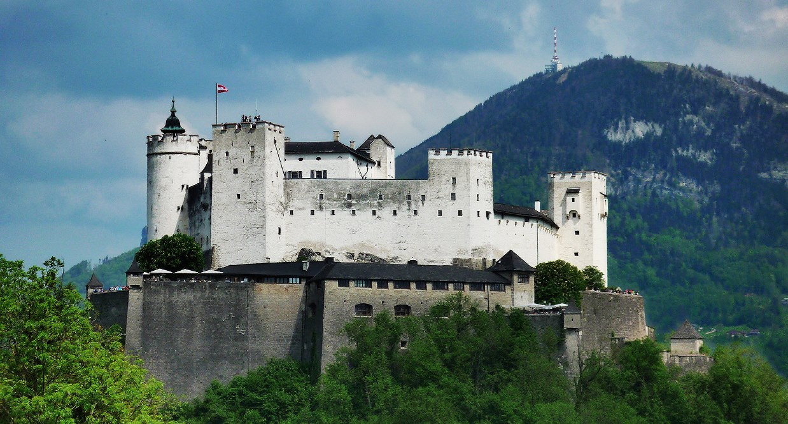
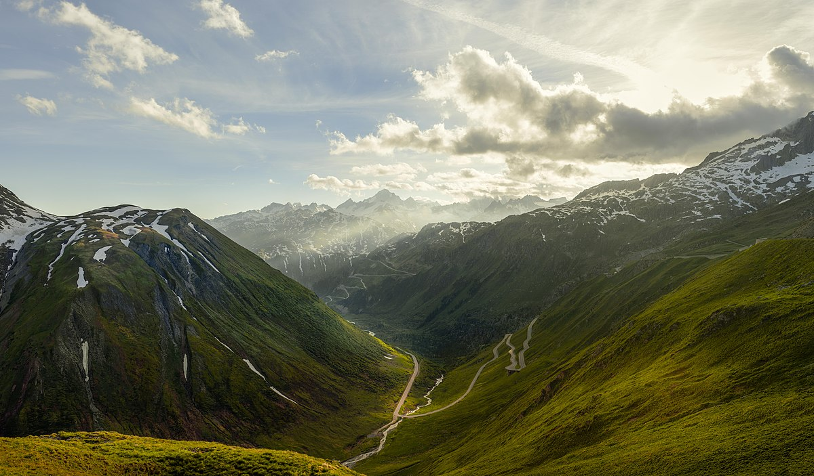
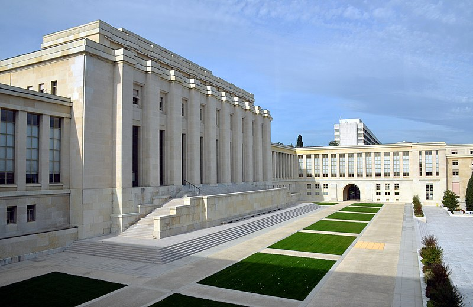
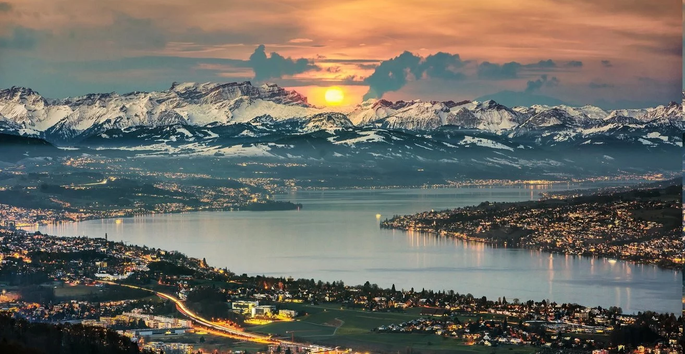
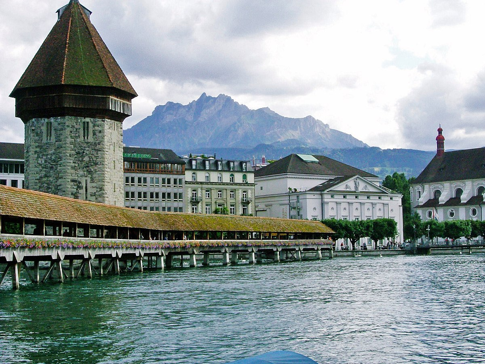
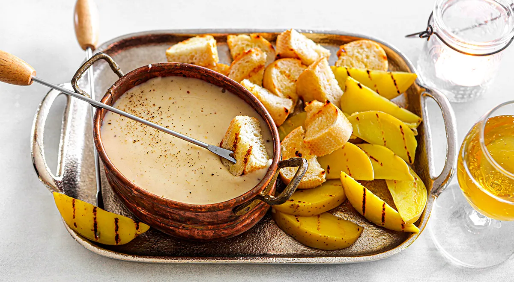
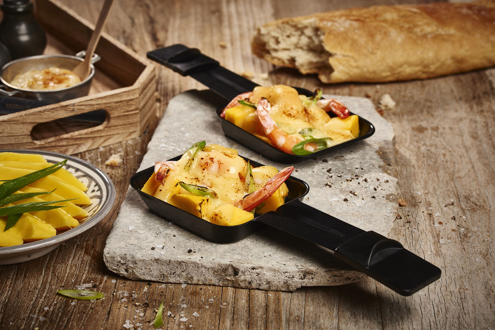
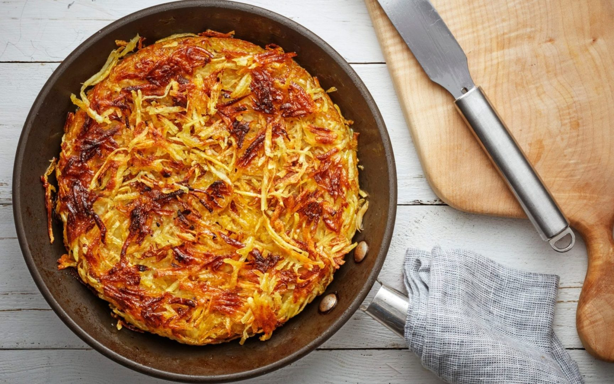

Швейцарія – це країна, яка відома своєю вишуканістю, точністю та неперевершеною красою Альп. Знаходячись у серці Європи, Швейцарія має багату історію, культурне різноманіття і прекрасні природні пейзажі. Країна, яка поєднує у собі неперевершену красу природи, вишуканість у культурі та інноваційність у бізнесі, роблячи її однією з найпривабливіших країн для життя та відвідування.
Загальні відомості про Швейцарію
Офіційна назва
Швейцарська Конфедерація
Столиця
Берн
Офіційна мова
Німецька, Французька, Італійська, Ретороманська
Населення
близько 8 мільйонів
Площа
41,290 км²
Валюта
Швейцарський франк (CHF)
Що подивитися у Швейцарії насамперед?
Аккуратний підхід до екскурсій, здивує вишуканістю, неймовірною природою та культурною різноманітністю.

Фортеця Хоензальцбург
Це величезна середньовічна фортеця, яка розташована у місті Зальцбург. Побудована в XIII столітті, вона є однією з найбільших та найкраще збережених фортець у всій Європі. З фортеці можна насолоджуватися захоплюючими видами на місто та Альпи.

Швейцарські Альпи
Це одна з найвідоміших гірських систем у світі, яка простягається через цілу Швейцарію та прилеглі країни. Гори Швейцарії відомі своєю красою та можливостями для активного відпочинку, такого як гірський туризм, катання на лижах, сноубординг та багато іншого.

Палац ООН
Знаходиться у Женеві, це один з головних офісів Організації Об'єднаних Націй. Цей комплекс служить головним місцем проведення міжнародних дипломатичних зустрічей, конференцій та переговорів.

Озеро Цюрих
Розташоване поруч з містом Цюрих, це одне з найбільших та найглибших озер Швейцарії. Озеро служить популярним місцем для відпочинку, різноманітних водних видів спорту та прогулянок вздовж берегів.

Капелла Брюкке
Це символ міста Люцерн та один з найстаріших дерев'яних мостів у Швейцарії. Він збудований у XV столітті та прикрашений портретами та фресками, які розповідають історію міста.
Загалом, ці місця представляють різноманітні аспекти Швейцарії - її культуру, природу, історію та міжнародне значення. Вони надають можливість туристам і мешканцям насолоджуватися красою і багатством цієї величної країни.
Що можна скоштувати?

Фондю
Одна з найвідоміших швейцарських страв, яка складається з розтопленого сиру, в який занурюють кубики хліба за допомогою виделки.

Раклет
Ще одна популярна швейцарська страва, яка полягає в тому, щоб розтопити сир Raclette і подавати його зі впіченим картофелем, ковбасками, огірками та іншими начинками.

Рёсті
Картопляні плacкi, які смажаться на сковороді до золотисто-коричневого кольору. Це популярна страва, яку часто подають з яйцем, сиром або ковбасою.
Швейцарія - це країна, що вражає своєю вишуканістю, точністю і високим рівнем життя. Знаменита своєю нейтралітетом, Швейцарія є символом стабільності в серці Європи. Ця країна відома своєю багатою культурою, великими горами, чистими озерами і східними містами.